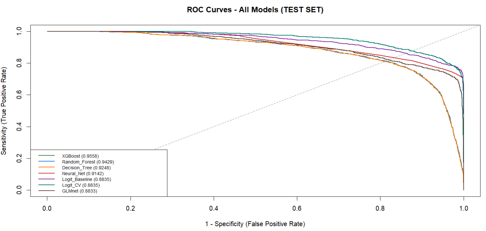
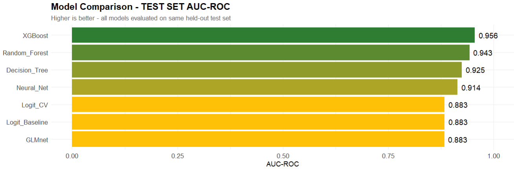
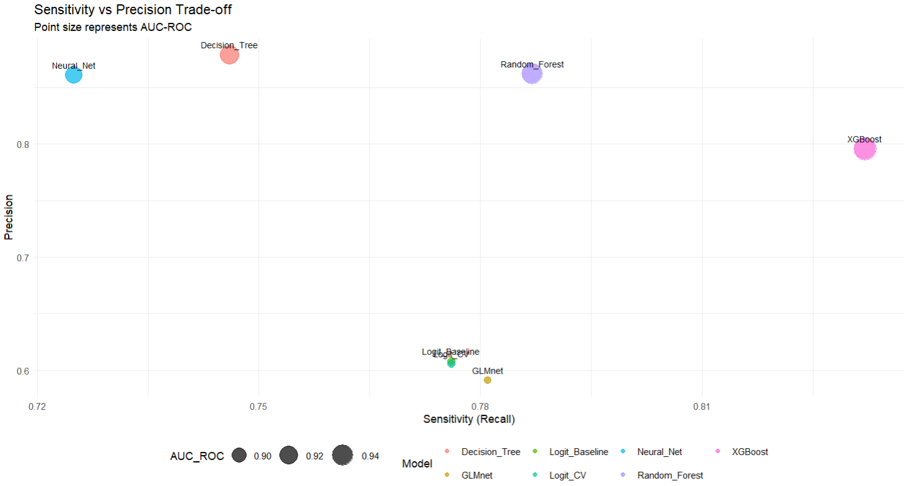

Same Data, Same Splits
All models are trained on identical data splits, tuned by cross-validation on the validation set, and compared only on the held-out test set — ensuring a fair, apples-to-apples comparison.
Machine Learning · R
Seven supervised machine-learning models compared head-to-head for predicting loan-level default risk — and translated into business-oriented credit policy insights: who to approve, at what threshold, at what cost.
7
Models compared
0.956
Best AUC-ROC (XGBoost)
83.2%
Of defaults caught
79.6%
Precision on flagged loans
A lender must decide whether to approve, decline, or price a loan based on borrower and loan characteristics at origination. Three questions drive this project:
The models are trained on the Kaggle Credit Risk Dataset — applicant profile, loan characteristics and credit-bureau features — with a stratified train / validation / test split that preserves the class imbalance of real lending books.
All models are trained on identical data splits, tuned by cross-validation on the validation set, and compared only on the held-out test set — ensuring a fair, apples-to-apples comparison.
From simple to complex: baseline & cross-validated Logistic Regression,
regularized GLMnet (LASSO/Ridge), Decision Tree,
Random Forest, XGBoost and a shallow
Neural Network — implemented in R with caret.
Metrics include ROC-AUC, PR-AUC, sensitivity, specificity and precision. Operating thresholds are chosen both statistically (Youden's J) and by business criteria — the approval-rate vs. default-rate trade-off.
XGBoost wins across the board — the highest discrimination (AUC-ROC 0.956, PR-AUC 0.913) while catching 83.2% of defaults at 79.6% precision. Tree ensembles clearly outperform linear models on this data, with a gap of about 7 AUC points over the logistic baselines.



| Model | AUC-ROC | PR-AUC | Sensitivity | Precision | F1 |
|---|---|---|---|---|---|
| XGBoost 🏆 | 0.956 | 0.913 | 0.832 | 0.796 | 0.813 |
| Random Forest | 0.943 | 0.901 | 0.787 | 0.862 | 0.823 |
| Decision Tree | 0.925 | 0.875 | 0.746 | 0.879 | 0.807 |
| Neural Network | 0.914 | 0.852 | 0.725 | 0.861 | 0.787 |
| Logistic (baseline / CV) | 0.883 | 0.728 | 0.776 | 0.607 | 0.681 |
| GLMnet (LASSO/Ridge) | 0.883 | 0.725 | 0.781 | 0.591 | 0.673 |
All metrics computed on the held-out test set, at each model's selected operating threshold.
A model is only useful once its probability-of-default (PD) scores are mapped to decisions. Using the recommended model, different cut-offs simulate different risk appetites:
Higher cut-off → lower approval rate, cleaner book. For when the lender prioritizes portfolio quality and capital protection.
Medium cut-off → a standard trade-off between approval volume and default risk. The default operating point for routine credit policy.
Lower cut-off → more approvals, more risk. Appropriate in growth phases, when pricing and collateral absorb part of the extra expected loss.
Complete R pipeline — data prep, model training, evaluation and plots — on GitHub.